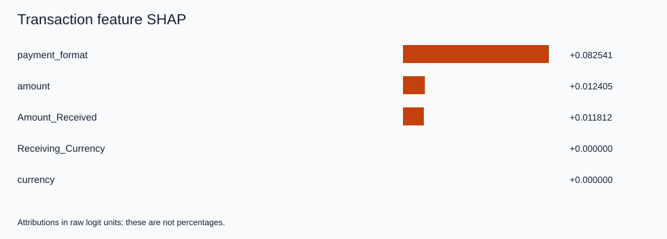
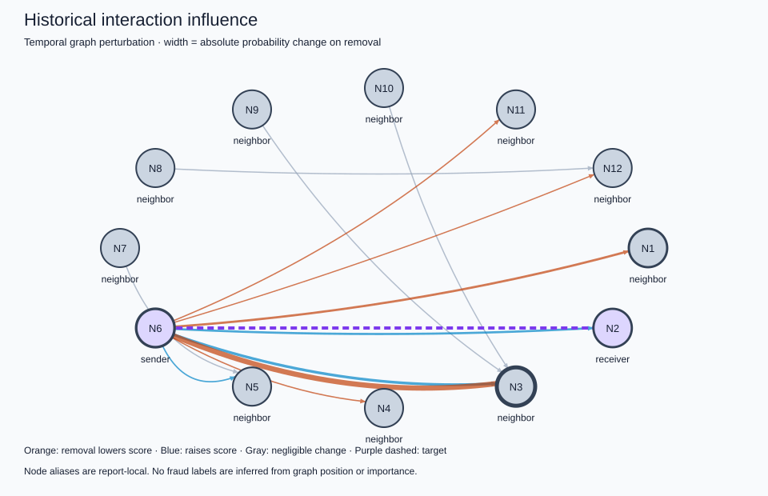

============================================================
TRANSACTION XAI
============================================================
Transaction: 3954298
Bank: Key_Bank
MODEL PREDICTION
Fraud model score (uncalibrated): 0.021777413
Prediction: LEGITIMATE (threshold 0.330380907)
PREDICTION PARITY
Existing evaluation: 0.021777414
XAI: 0.021777413
FEATURE CONTRIBUTIONS (raw logit units)
1. payment_format = ACH +0.082541
2. amount = 4642.08 +0.012405
3. Amount_Received = 4642.08 +0.011812
4. Receiving_Currency = USD +0.000000
5. currency = USD +0.000000
TEMPORAL EVIDENCE
Recent completed batches examined: 8
Events involving sender/receiver in that window: 8
Time since sender's last recorded event: 116082.0 seconds
Time since receiver's last recorded event: 631812.0 seconds
Window volume by currency: {'USD': 142046.79}
IMPORTANT HISTORICAL INTERACTIONS
Event 3796692: delta probability on removal = -0.001419794
Event 3934824: delta probability on removal = +0.000530946
Event 3915548: delta probability on removal = -0.000369076
Event 3816126: delta probability on removal = +0.000339754
Event 3835429: delta probability on removal = +0.000065897
Event 3835430: delta probability on removal = -0.000029916
Event 3835431: delta probability on removal = -0.000029028
Event 3835428: delta probability on removal = -0.000002169
Event 3959838: delta probability on removal = +0.000000000
Event 3966634: delta probability on removal = +0.000000000
Event 3972747: delta probability on removal = +0.000000000
Event 3967036: delta probability on removal = +0.000000000
GRAPH EVIDENCE
Evaluated historical edges: 12
Nodes represented, including target endpoints: 12
Method: temporal graph perturbation (not GNNExplainer)
INTERPRETATION
payment_format contributed positively relative to the sampled training reference, with account memory fixed.
amount contributed positively relative to the sampled training reference, with account memory fixed.
Amount_Received contributed positively relative to the sampled training reference, with account memory fixed.
Suppressing the most influential tested historical event changed the score by -0.001419794.
Temporal counts and volumes describe observed history; they are not independently attributed model features.
This explanation describes model behavior and does not establish that the transaction is actually fraudulent.
FIDELITY / STABILITY
Retained-window-subgraph absolute score error: 0.000062729
Background-resampling top-feature Jaccard: 1.0
LIMITATIONS
Model explanations do not establish fraud or causality; scores are uncalibrated.
Feature SHAP holds account memory fixed; static node-feature attribution is not implemented.
Temporal graph perturbation is a bounded replay intervention, not GNNExplainer. Earlier anchor memory remains intact.
Interventional SHAP hybrids can be unrealistic for correlated fields; exactness is relative to the sampled background.
Legacy preprocessing reproduces current original evaluation and saved metrics; original fitted objects were not preserved.
The original fixed-size batching and timestamp-tie behavior are preserved.
No combined federated-continual checkpoint or formal differential privacy is implemented.
============================================================